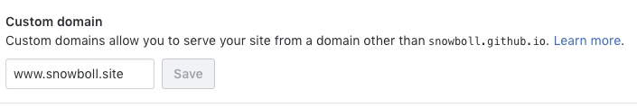

Configurar un Dominio Hostinger con Github Pages
Acabas de comprar un dominio en Hostinger y quieres configurarlo para que este funcione
con Github pages pero no sabes como y eres algo novato en este tema pues bien, me paso
lo mismo así que decidí escribir un post donde explico como se puede hacer esto y la
verdad fue más fácil de lo que pensé, bien.
Comencemos, después de haber subido todo a tu repositorio de Github y haber creado tu página
con gh-pages,debes ir a Settings

e ir hasta Custom domain

e ingresar el
Dominio comprado y click en Save y listo esto seria todo en Github ahora vamos con Hostinger.
Debes ir a tu cuenta de Hostinger, Dominios, administrar e ir a la zona DNS
una vez ahí debes ir a "CNAME (Alias)" y agregar el dominio de Github que te dieron a ti
al momento de crear tu pagina y das click en guardar después debes configurar A (Host) con:
- 185.199.108.153
- 185.199.109.153
- 185.199.110.153
- 185.199.111.153
y espera de 30 minutos a una hora mas o menos y podrás entrar a tu Dominio.
para más información y otros datos visita help.github.com